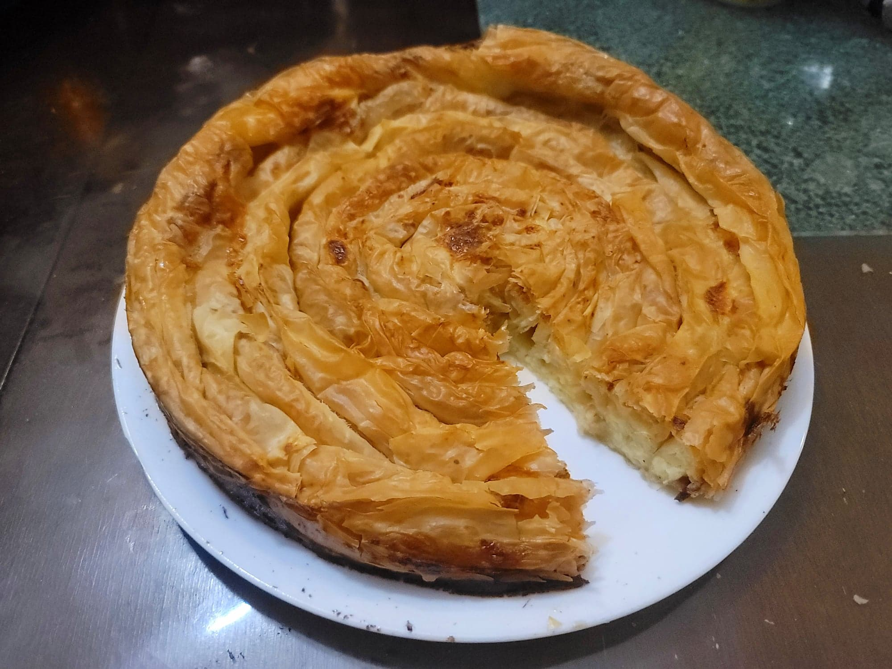

Banitsa

Ingredients:
- 4 Eggs
- 450 g Bulgarian yogurt or Greek yogurt
- 12 oz Sirene cheese or Feta, crumbled
- 1/2 tsp Baking soda
- 1 lb Phyllo sheets
- 3/4 cup Butter, melted, or as needed
Instructions:
- Preheat an oven to 375 degrees Fahrenheit. Grease a 12 inch springform pan with butter.
- Place the eggs and yogurt into a mixing bowl. Beat together with an electric hand mixer until smooth. Then add in the cheese and baking soda and beat again until thoroughly mixed.
- Take a phyllo sheet and brush with melted butter. Add the cheese/yogurt mixture in a thin line across the long side nearest you or gently brush across the buttered sheet. Roll it into a log and then wrap it into a coil. Place into the center of the springform pan and then repeat with the remaining phyllo sheets, adding to the coil until it fills up the entire pan. Then brush over the top of the coil with more melted butter.
- Place the springform pan over a baking sheet in case of leakage. Place into the oven and bake for 45-60 minutes, or until golden.
- Remove from the oven and let cool for 10-20 minutes before slicing. Serve hot.